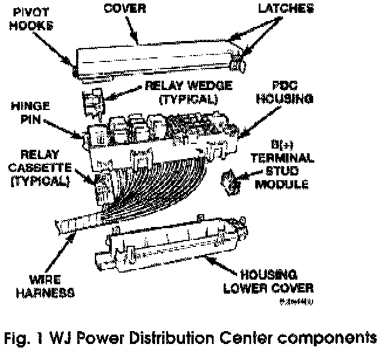
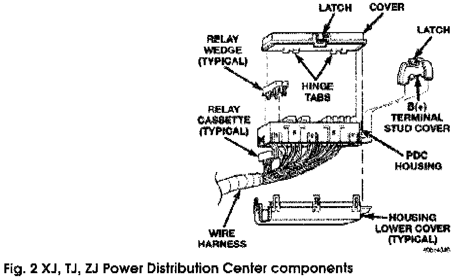

Disassembly and Assembly
[1][2]POWER DISTRIBUTION CENTER -XJ, TJ, ZJ, WJ


The Power Distribution Center (PDC) cover, the PDC housing lower cover, the PDC relay wedges, the PDC relay cassettes and the PDC B(+) terminal stud module (WJ only) are available for service replacement (Fig. 1 and Fig. 2). The PDC cover can be simply unlatched and removed from the PDC housing without the PDC being removed or disassembled. Service of the remaining PDC components requires that the PDC be removed from its mounting and disassembled. Refer to Wiring Repair in the index of this service manual for the location of the wiring repair procedures.